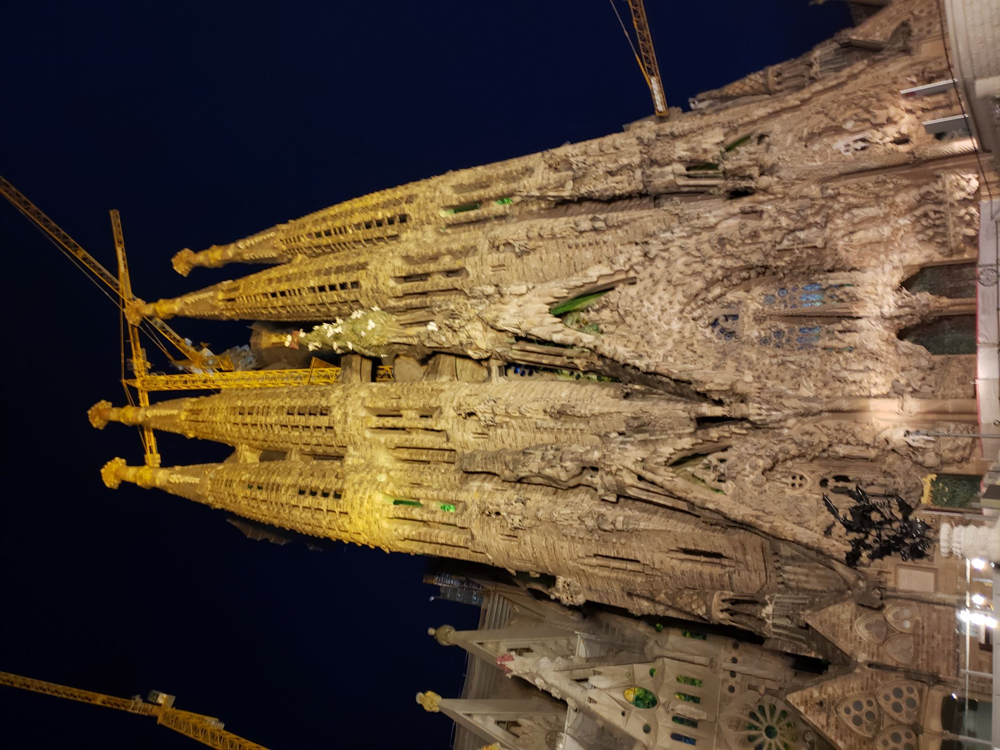

One of the many churches in Barcelona. Dedicated to Saint Mary, known as the mother of Jesus Christ.
It is very beautiful. One of the best examples of Catalan Gothic architecture.
This building is frightening. This picture alone does not do it justice because it is so overwhelming and towering.
Designed by the famous Antoni Gaudi. It had numerous bibical depictions and it is still being built.
This building has been in construction for over a hundred years, that's how huge it is!"